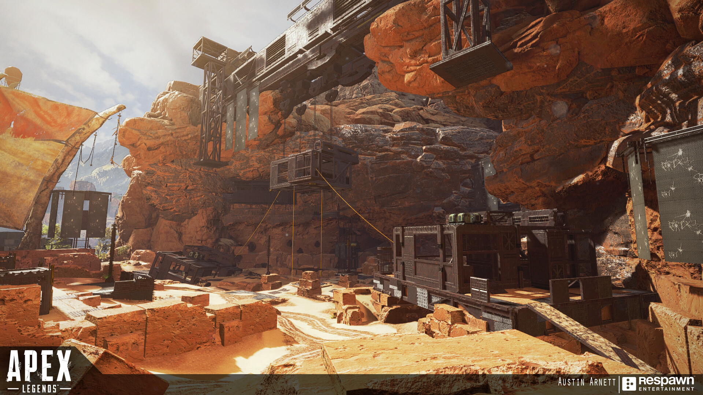
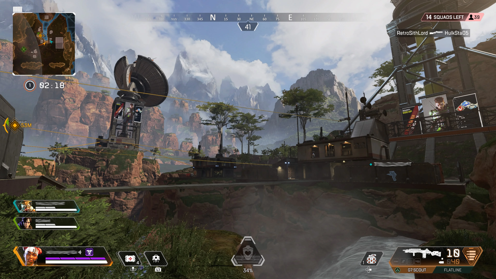

Mais Kills no Início do Jogo
Se você está procurando ação rápida e muitas kills no início do jogo, tente pousar em locais populares como Skull Town ou Bunker.
Dicas para jogadores iniciantes:
- Fique perto de sua equipe. É mais fácil sobreviver quando você pode apoiar uns aos outros.
- Aprenda a usar o sistema de ping. Isso permite que você comunique informações importantes para sua equipe sem precisar usar o chat de voz.
- Pratique o uso de diferentes armas no campo de treinamento. Cada arma em Apex Legends tem um recuo único que você precisará controlar para atirar com precisão.
Busca de Ótimos Recursos
Se você está mais interessado em saquear e se equipar para o final do jogo, tente pousar em áreas menos populares com alto potencial de saque, como Airbase ou Swamps.
Dicas para jogadores iniciantes:
- Use o mapa para encontrar áreas de alto valor de saque. Essas áreas geralmente têm mais caixas de saque e uma chance maior de encontrar equipamentos de alta qualidade.
- Fique atento ao círculo. Você não quer ser pego fora do círculo, pois isso pode causar danos significativos.
- Aprenda a distinguir entre os diferentes tipos de armadura. Armaduras de nível superior fornecem mais proteção.

